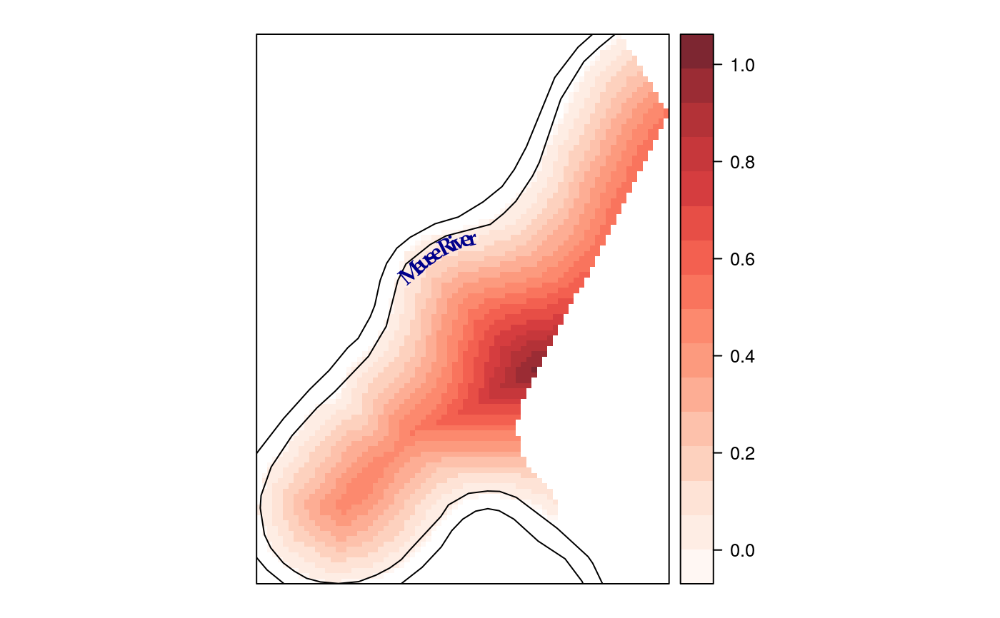
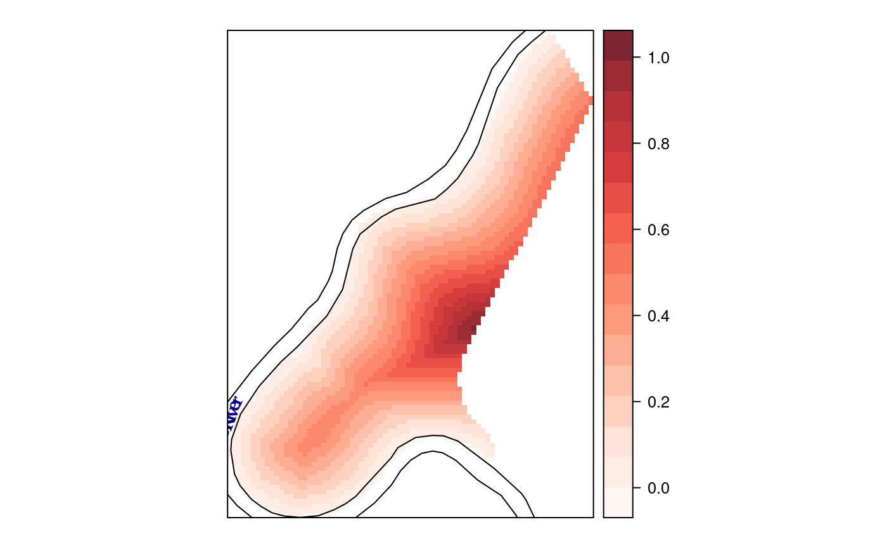
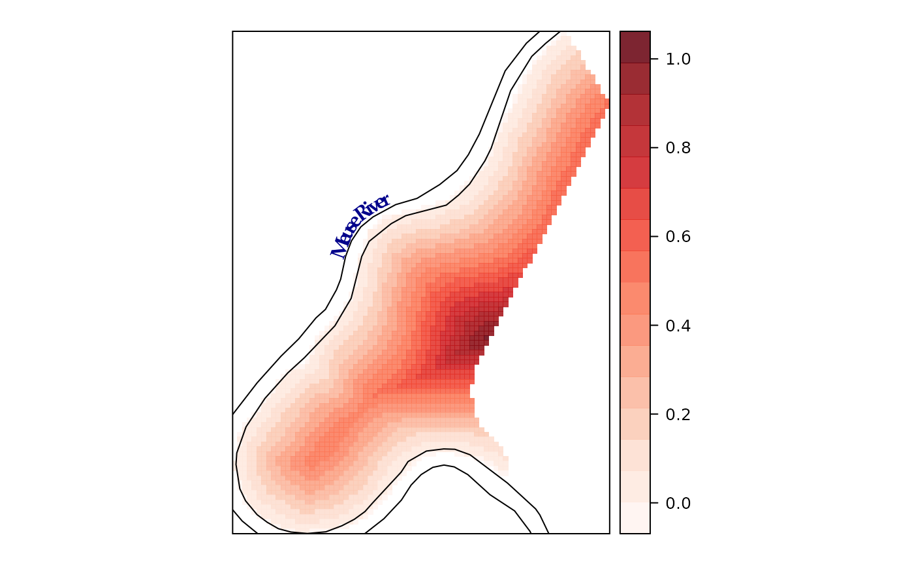

lineLabel.RdThe lineLabel function produces and draws text
grobs following the paths defined by a list of Line
objects. The sp.lineLabel methods use this function to work
easily with spplot.
lineLabel(line, label, spar=.6, position = c('above', 'below'), textloc = 'constantSlope', col = add.text$col, alpha = add.text$alpha, cex = add.text$cex, lineheight = add.text$lineheight, font = add.text$font, fontfamily = add.text$fontfamily, fontface = add.text$fontface, lty = add.line$lty, lwd = add.line$lwd, col.line = add.line$col, identifier = 'lineLabel', ...) sp.lineLabel(object, labels, byid=TRUE,...) label(object, text, ...)
| line | a |
|---|---|
| object | A |
| label, labels, text | a string or expression to be printed
following the path of |
| byid | If TRUE (default) only the longest line of each unique
|
| textloc | a character or a numeric. It may be 'constantSlope',
'minSlope' or 'maxDepth', or the numeric index of the location. If
it is a numeric, its length must coincide with the number of
|
| spar | smoothing parameter. With values near zero, the label will closely follow the line. Default value is .6. See smooth.spline for details. |
| position | character string ('above' or 'below') to define where the text must be placed. |
| col, alpha, cex, lineheight, font, fontfamily, fontface | graphical arguments for the text. See gpar for details. |
| lty, lwd, col.line | graphical parameters for the line. See gpar for details. |
| identifier | A character string to identify the grob to be created. |
| ... | other arguments |
Oscar Perpiñán Lamigueiro.
Part of the label location code is adapted from panel.levelplot.
smooth.spline is used to resample the segment of the line where the label is placed.
data(meuse.grid) coordinates(meuse.grid) = ~x+y proj4string(meuse.grid) <- CRS("+init=epsg:28992") gridded(meuse.grid) = TRUE data(meuse) coordinates(meuse) = ~x+y data(meuse.riv) meuse.sl <- SpatialLines(list(Lines(list(Line(meuse.riv)), "1"))) library(RColorBrewer) myCols <- adjustcolor(colorRampPalette(brewer.pal(n=9, 'Reds'))(100), .85) labs <- label(meuse.sl, 'Meuse River') ## Maximum depth sl1 <- list('sp.lineLabel', meuse.sl, label=labs, position='below', textloc='maxDepth', spar=.2, col='darkblue', cex=1, fontfamily='Palatino', fontface=2) spplot(meuse.grid["dist"], col.regions=myCols, sp.layout = sl1)## Constant slope sl2 <- modifyList(sl1, list(textloc = 'constantSlope')) ## Default spplot(meuse.grid["dist"], col.regions=myCols, sp.layout = sl2)## Location defined by its numeric index sl3 <- modifyList(sl1, list(textloc = 140, position='above')) spplot(meuse.grid["dist"], col.regions=myCols, sp.layout = sl3)